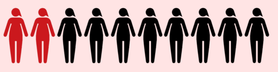
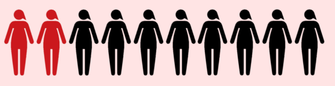

In Italia il 31.5% delle donne
ha subito violenza sessuale, fisica o psicologica nella sua vita.
fonte: istat.it
Nel 2020, a causa del
lockdown, il problema della violenza di genere è diventato via via sempre maggiore.
Perciò ho voluto creare questo progetto, per poter capire meglio la reale gravità di questo problema, molte volte sottovalutato e sminuito.
Quello che nessuno ha detto è che la violenza sulle donne è un fatto quotidiano, comune, di massa.
Dacia Maraini, La violenza contro le donne, “Paese Sera”, 11.10.1975
La violenza contro le donne viene definita fatto sociale che necessita di interventi mirati in termini di politiche pubbliche solo verso la fine degli anni 70.
Saranno infatti i movimenti femministi a trasformare questo fenomeno da privato a pubblico, mettendo in luce la gerarchia sociale e il controllo dell’uomo sulla figura femminile.
Nel 1976 a Bruxelles venne istituito un tribunale dei crimini commessi contro le donne con lo scopo di difendere le vittime rendendo a loro giustizia e sensibilizzare la società.
Verso gli anni 80 questo fenomeno viene esaminato anche dalle Nazioni Unite che lo definiranno come “qualsiasi atto di violenza di genere che provoca o possa provocare danni fisici, sessuali o psicologici alle donne, incluse le minacce di tali atti, la coercizione o la privazione arbitraria della libertà sia che si verifichi nella vita pubblica o privata”.
Violenza di genere senza età
Questo grafico mostra la percentuali, divise per età, di donne che hanno subito violenza di qualsiasi genere,
si può notare subito
quanto questo fenomeno sia complesso e perverso infatti sono colpite tutte le fascie d'età.
Osservando il grafico notiamo che la fascia più colpita è quella dai 25 ai 54 anni, questo dimostra quanto il fenomeno sia esteso e complesso.
Allo stesso tempo è presente una forte incidenza anche sulle donne di giovane età, a partire dai
16 anni.
Il senso di solitudine e la paura di non essere comprese di queste adolescenti portano al silenzio, e tutto ciò spesso assume la sembianza di quello che dovrebbe essere il loro primo amore.
Percentuale di donne di 16-70 anni che hanno subito violenza nel corso della vita
La Regione con la percentuale più alta è il Lazio, pari al 39.2%. Per questo motivo si è reso necessario l’inserimento della Legge regionale n.4 del 19 marzo 2014: “Riordino delle disposizioni per contrastare la violenza contro le donne in quanto basata sul genere e per la promozione di una cultura del rispetto dei diritti umani fondamentali e delle differenze tra uomo e donna.”
La Basilicata ha un’incidenza del fenomeno del 23.7%, una percentuale più bassa rispetto alle altre Regioni, ma nonostante questo i dati rimangono allarmanti,
mediamente 1 donna su 3 subisce violenza mostrando un fallimento dell’intera comunità nazionale.
Come tutti sappiamo i dati hanno dei limiti posti dalla veridicità delle informazioni,
infatti molte donne hanno paura a denunciare la realtà della loro situazione.
Quindi ho voluto scavare più a fondo
sul motivo che porta il centro-nord ad avere una percentuale così alta rispetto al mezzogiorno.
Una correlazione interresante può essere vista nel tasso di occupazione femminile in Italia.
Donne che hanno subito violenza nel corso della vita
Tasso di occupazione femminile
Personalmente credo che le due percentuali possano essere facilmente correlate, si vede infatti
che dove le donne lavorano le percentuali di violenza sono maggiori.
Questo mi porta a credere che dove le donne hanno la possibilità di lavorare ed emanciparsi,
maturano maggiore consapevolezza della loro qualità e forza considerando così la denuncia uno strumento valido per combattere l'omertà della società.

CONCLUSIONI
Questo progetto dimostra quanto questo tema, nonostante sia considerato e
definito un fatto sociale e di dominio pubblico, in realtà continui a svilupparsi senza sosta.
Specialmente in questo ultimo anno a causa della pandemia che ha imposto per un lungo periodo
un distacco sociale e quindi il venir meno di possibilità di confronto e aiuto.
Fortunatamente molte associazioni hanno cercato di fornire assistenza psicologica a distanza alle vittime,
uno spiraglio di speranza che speriamo possa dare fiducia a coloro che hanno paura di denunciare.
Molto interessante è il cosidetto
"Segnale di aiuto della violenza domestica"
ovvero un segnale, nato durante la pandemia,
che ha la funzione di avvisare gli altri che ci si sente minacciati
e si ha bisogno di aiuto e si può usare anche durante una videochiamata.
Queste iniziative unite alle ben più note, gestiste dallo stato, come il
Numero Antiviolenza 1522
possono veramente fare a differenza e far capire alle persone la pericolosità di questo fenomeno
così da far star meglio tutte e tutti.
Purtroppo il percorso per l'arrivo è ancora lungo, ma credo che tenere alta l'attenzione e dare
voce ai fatti sia l'unica strada percorribile.
Bisogna far capire che esistono persone che aiutano tutte le donne in difficoltà e che non sono sole.
Tutti i dati sono stati forniti dall'indagine sulla sicurezza delle donne realizzata dall'ISTAT
Credits
Progetto creato nel 2021 nell'ambito del contest "Data Driven"
Organizzato da Camplus College
Realizzato da Matteo Matassoni
Condividi su: Facebook
,
Twitter
,
Linkedin.